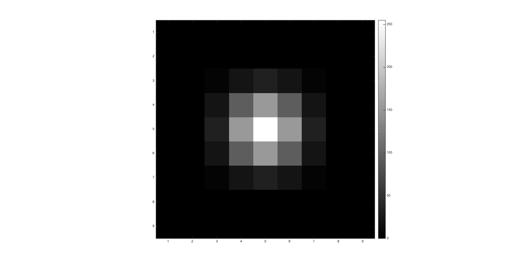
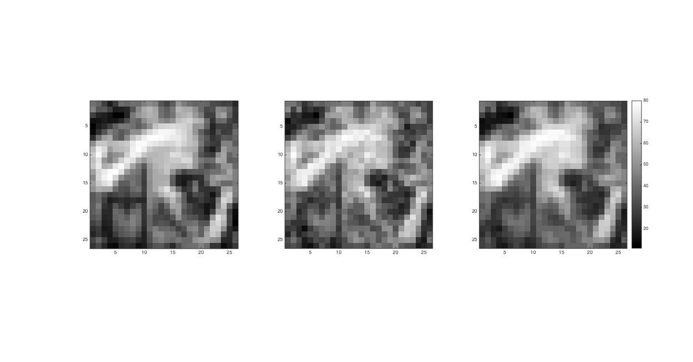

Edge-preserving Smoothing using Patch-Based Filtering
Objectives:
- Apply the patch based filtering
- Calculate and minimize the RMSD
Contents
Variables and Parameters
isotropize = 1.0; factor = 20; patch_size = 9; window_size = 25; addpath('../../common/'); load '../data/barbara.mat'; input_image = imageOrig; sigmaOptimal = 1.0;
Gaussian Mask
gaussian_mask = fspecial('gaussian', [patch_size, patch_size], isotropize);
[rows, cols] = size(gaussian_mask);
gaussian_mask_stretched = myLinearContrastStretching(gaussian_mask);
images = zeros(rows, cols, 1);
images(:, :, 1) = gaussian_mask_stretched;
Mask used to make images Isotropic
myShowImages(images);
Subsampling Image with gaussian blur of std 0.66
input_image = input_image(1:factor:size(input_image, 1),1:factor:size(input_image, 2));
gaussian_filter = fspecial('gaussian', [3, 3], 0.66);
input_image = imfilter(input_image, gaussian_filter);
[rows, cols] = size(input_image);
Noisy Image
noisy_image = myGaussianNoiser(input_image);
rmsd_with_noisy_image = myRMSDofImage(input_image, noisy_image);
disp(['RMSD with noisy image = ', num2str(rmsd_with_noisy_image)]);
RMSD with noisy image = 3.8428
Smoothening image
tic; output_image = myPatchBasedFiltering(noisy_image, patch_size,... window_size, sigmaOptimal, gaussian_mask); elapsed_time = toc; if elapsed_time > 300 save('../images/barbara_patch_optimal.mat', 'output_image') end images = zeros(rows, cols, 3); images(:, :, 1) = input_image; images(:, :, 2) = noisy_image; images(:, :, 3) = output_image; myShowImages(images); optimal_RMSD = myRMSDofImage(input_image, output_image); disp(['RMSD with optimal output = ', num2str(optimal_RMSD)]); disp(['Optimal sigma = ', num2str(sigmaOptimal)]);
RMSD with optimal output = 3.7151 Optimal sigma = 1
Tweaked Parameters
RMSD with 0.9 sigmaOptimal
tic; output_image_1 = myPatchBasedFiltering(noisy_image, patch_size,... window_size, 0.9*sigmaOptimal, gaussian_mask); elapsed_time = toc; if elapsed_time > 300 save('../images/barabara_01.mat', 'output_image_1') end new_RMSD = myRMSDofImage(input_image, output_image_1); disp(['RMSD with 0.9*sigmaOptimal output = ', num2str(new_RMSD)]);
RMSD with 0.9*sigmaOptimal output = 3.3828
RMSD with 1.1 sigmaOptimal
tic; output_image_2 = myPatchBasedFiltering(noisy_image, patch_size,... window_size, 1.1*sigmaOptimal, gaussian_mask); elapsed_time = toc; if elapsed_time > 300 save('../images/barabara_02.mat', 'output_image_2') end new_RMSD = myRMSDofImage(input_image, output_image_2); disp(['RMSD with 1.1*sigmaOptimal output = ', num2str(new_RMSD)]);
RMSD with 1.1*sigmaOptimal output = 4.1442